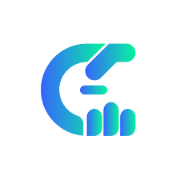

CelMouse
 يحول هاتفك الذكي إلى جهاز تحكم ذكي لجهاز الكمبيوتر الخاص بك! يتيح لك التحكم في الماوس ولوحة المفاتيح بجهاز الكمبيوتر عن طريق إمالة هاتفك. لا كابلات ولا متاعب - فقط قم بتحريك هاتفك وشاهد السحر يحدث على شاشة جهاز الكمبيوتر الخاص بك!
الميزات الرئيسية:
- تحكم دقيق بالماوس: تحرك المؤشر بسهولة باستخدام حساسيات قابلة للتعديل.
- محاكاة لوحة المفاتيح: اكتب مباشرة من هاتفك.
- تخصيص الإعدادات: ضبط الحساسية وعناصر التحكم.
- تحكم في العروض التقديمية والوسائط: مثالي للطلاب والمحترفين.
- تواصل عبر Wi-Fi أو Bluetooth: اتصال فوري.
الفوائد:
- زيادة الإنتاجية والراحة.
- مثالي للطلاب، اللاعبين، محترفي المكاتب، وعشاق الوسائط.
حالات الاستخدام:
- طلاب ومعلمون: التحكم في عروض الشرائح.
- لاعبون: التنقل بين القوائم.
- محترفو المكاتب: تقديم العروض والمشاركة في الاجتماعات.
- عشاق الأفلام: التحكم في مشغلات الفيديو.
كيفية الاستخدام:
- تحميل التطبيق على هاتفك.
- تثبيت البرنامج على جهاز الكمبيوتر.
- الاتصال عبر Wi-Fi أو Bluetooth.
التوافق:
- متوافق مع أنظمة التشغيل الرئيسية (Windows، macOS، Linux).
<

>